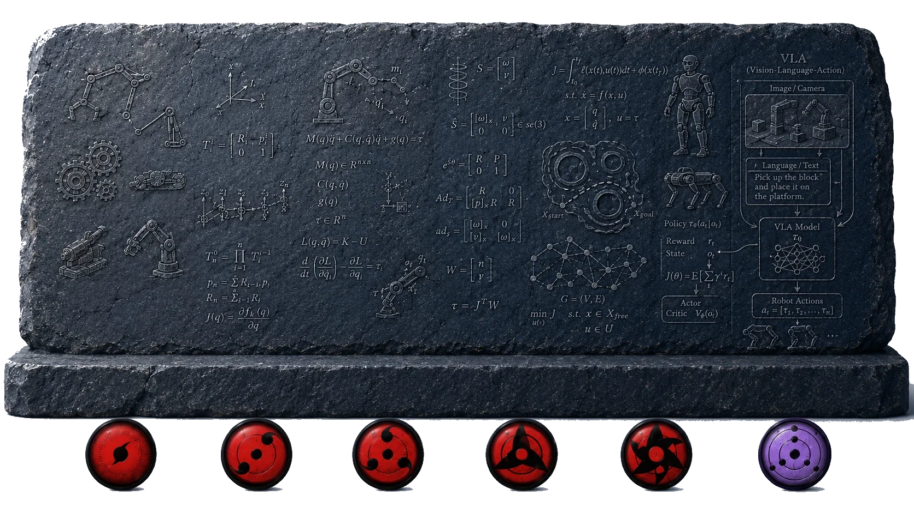

先修知识¶
当然，先修知识会随着研究的深入而变化，尤其是数学，数学就像是写轮眼，看同一个石碑，不同层次的「写轮眼」所看到的内容也完全不同。
{kind=link}

只会加减乘除，可以学习成为机器人调试工程师；学了线性代数、微积分，就可以掌握运动学、动力学建模等基础内容；学了计算方法、凸优化、微分几何就可以参与一些辨识、规划、学习方面的工作。
但是，由于机器人学涉及面广，不同方向所需要的基础知识也完全不同，如果一开始就陷入「先修知识」的泥潭中，可能就得不偿失了。
所以，我认为，可以先列一些比较基础的先修知识，其他的在后续相应部分提及即可：
-
基本的英文：在机器人方面，很多写得深入浅出的经典教材大都是国外的，大家必须学会阅读英文教材。这个过程一开始肯定是痛苦的，但是，基本上坚持一个月就会习惯了。
-
线性代数：所有的空间变换、机器人相关计算都依赖于线性代数，甚至需要有一些基本的「线性空间」思维。对于线性代数，我首推 Prof. Gilbert Strang 的《Linear Algebra》，在 Youtube 和网易公开课上可以找到视频。这门课一开始就引导大家从空间的角度看待问题，而不是强调如何计算行列式。而且，网易公开课上有中文字幕，对于初学者也还算友好。
-
微积分：机器人里，所有涉及到导数、积分、优化的地方，都需要用到微积分。所以，这门数学课也是一开始就绕不开的。我没有太好的视频推荐，不妨也看看 Gilbert Strang 的《微积分重点》 (Highlights of Calculus)？
-
理论力学：机器人学就是每天与力打交道。但是一般机器人教材里都不会仔细推导空间变换、虚功原理、拉格朗日等力学理论，而且这些东西又相对抽象，很多初学者的自学过程就是被截杀在动力学章节的。当然，这部分我也没有太好的推荐资料，学堂在线上有清华高云峰老师的《理论力学》公开课，也可以参考一下。（但至少我当年上他的课总是犯困）。
-
Matlab or Python：这两个都是非常容易上手，且非常方便数据可视化的编程语言。大家在学习机器人学的过程中，能非常容易地通过这类脚本语言实现一些算法，从而用于验证自己的推导结果。当然，这两部分只要掌握基本的矩阵操作和可视化操作就可以了。其他更高级的用法可以之后再学习。Coursera 上很容易找到这两门语言的入门课程 Matlab、Python。
-
控制理论：机器人学是离不开控制的，但是机器人学教材一般不会过多介绍这块。当然，目前大多数工业机器人都还是使用比较简单的算法。但是，作为研究者，有必要了解一些基本的控制理论，例如 PID、状态方程、可观性、可控性、李雅普诺夫、最优控制、一点点非线性控制与一点点智能控制等。这部分可以在 Youtube 上看看 Brian Douglas 的视频，在 B 站上也能找到中文字幕版 【中英字幕】Brian Douglas Control Theory。
-
数字电路与模拟电路：机器人是一门实践科学，只有当你把你推导的公式写成代码、并最终让实际机器人按照你的想法动起来的时候，才说明你掌握了相关知识。数电模电的知识可以让你对逻辑电路有个基本了解，不至于后面连为什么电机前面要加一个驱动器都不知道；同时，在身边没有实际机器人的情况下，自己搭个小电路做一些控制实验也是非常方便的。这块知识可以随便找本教材看看，例如我当时用的是唐庆玉老师的教材。
-
一点点单片机：要想搭建简单的控制电路，只有数电模电知识是不够的，还要能将这些知识转换成实际的电路，并且能运行控制代码，那么就需要会单片机。对于单片机，可以网上随便买一些带伺服电机控制教程的最小系统板，学学 Arduino 或 STM32，当然，如果能参加个 RoboMaster 或者恩智浦杯智能车竞赛（原飞思卡尔）什么的是最好了，可以对嵌入式的各个模块有个基本了解。
-
Linux 和 C 语言：现在有了电路部分，我们需要将公式代码变成电路指令，这就涉及嵌入式的编程了。这块建议学一点 C 语言。嵌入式对 C 的要求其实并不高，随便学点语法就够了，例如《C语言入门》。但是，如果未来想做一些更加上层的工作，最好一开始就把 C 学好。学编程，Linux 是个不错的选择，所以，这时候，可以尝试安装个 Linux 系统，在上面学习 C 语言。
-
基本的3D设计：在制作实验平台的时候，经常会遇到需要加工设计小零件的情况，这时候掌握一个3D设计软件可以大大提高开发速度，例如 SolidWorks 就是个不错的选择。配合上 3D 打印机之类的工具就可以实现快速原型设计了。（即使没有 3D 打印机，在网上也可以很容易找到 3D 打印服务，把你设计的 3D 文件发过去就可以了）。
-
B 站：B 站（bilibili.com）还是有很多神奇的学习资源的，上面很多国外的课程、Coursera 课程等，在 B 站上可能都能找到免费、有字幕的视频，还有很多前辈自己录制和制作的视频。
-
AI 工具：当前的前沿大语言模型的专业知识水平已经远超绝大多数人，所以，在学习过程中充分使用 AI 工具，让它协助你理解知识点、编写验证代码、查找权威资料、讨论问题点等都是事半功倍的。有机会一定要用上最好的模型。
上面这些知识，基本是一个自动化专业或者机电专业大三学生应该达到的水平。如果对上述几部分有了基本了解，就可以开始看机器人学的知识了。